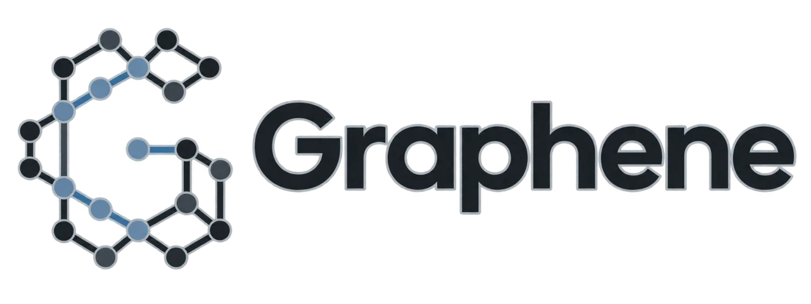
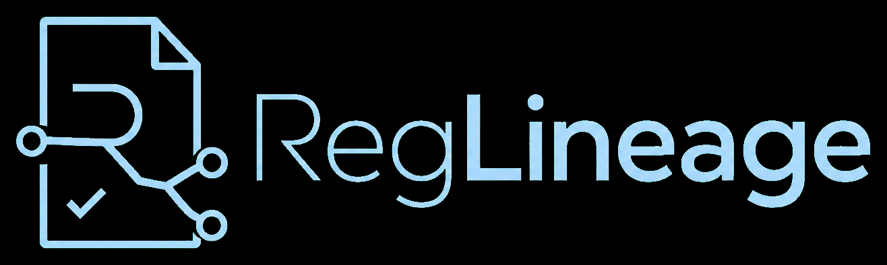
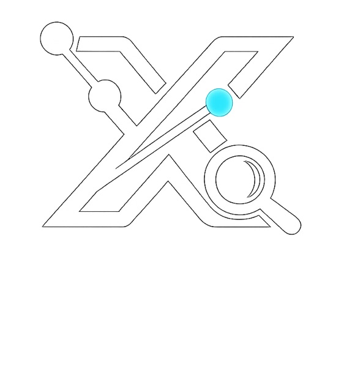
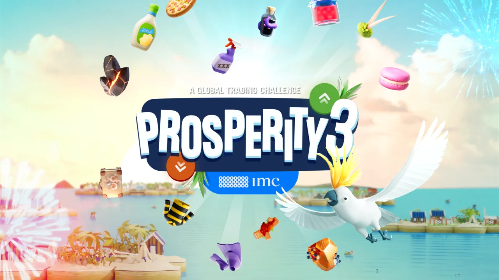

Helloooo world
I'm Alex, a rising junior studying Math + CS at Northeastern and really trying to make an :
Impact
Impact
Helloooo world
I'm Alex, a rising junior studying Math + CS at Northeastern and really trying to make an :
Impact

Local first mission control for bounded multi agent coding: it validates dependency aware work, schedules policy allowed tasks in isolation, and assembles evidence for review; an isolated local commit is created only after explicit approval

A governance control loop that makes AI data capabilities revocable when policy or lineage changes; DataHub suspends only affected work, requires approved repair, and verifies writeback before restoring access
2.96M row governed demo
A local workbench that turns small, human approved X/Twitter captures into durable SQLite snapshots for search, export, and bounded read only MCP access; its browser first workflow preserves provenance and partial results without automating around login or rate limit gates

Placed 912th out of roughly 13,000 teams, ranking in the top 8% globally; collaborated on Python strategies spanning market making, scalping, locational arbitrage, and mean reversion while balancing execution and risk
Improved organic and AI assisted search visibility across crawlability, indexing, site architecture, metadata, and performance while building Python and C++ ecommerce data systems with indexing, query caching, and profiling across more than 3M rows
Support students in CS 3200 and CS 1800 through office hours, debugging, project guidance, and clear explanations of database and discrete mathematics fundamentals
Served on the board, planning and promoting first year events that connected students with an inclusive engineering community
Built Python and MATLAB HPC pipelines to process and visualize more than 10,000 oncogenic protein variants
I picked up golf recently and I've really been loving it; it's one of those sports that really really humbles you every single time you step on the course, but that one perfect shot keeps pulling you right back out there
Seven years in, I still hang pieces, miss obvious tactics, and immediately queue another game
Add me on Chess.com! ↗Open to opportunities, research, and interesting problems
Email: lopez.alexan@northeastern.edu